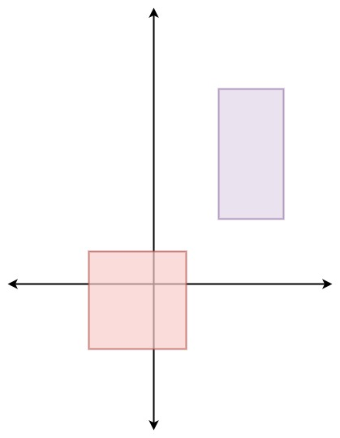

497. 非重叠矩形中的随机点
按矩形内整数点数建前缀和，在总点数里均匀抽序号 k，二分定位矩形，再按行编号拆出坐标。
思路
- 第
i个矩形有(x−a+1)×(y−b+1)个整数点（含边界），前缀和pre让「按面积加权抽矩形」变成一次二分。 pick：k = 随机数 × 总点数，二分找第一个pre[i] > k的矩形，k就落在它里面。- 矩形内按行编号：
rest = k − pre[i−1]，x = a + rest % 宽、y = b + rest / 宽，每个点恰好对应一个k。 - 面积可能很大，点数用
long存。
图解
最优解
1import java.util.*;2 3class Solution {4 private final int[][] rects;5 // pre[i]：前 i 个矩形覆盖的整数点总数，用来按面积加权挑矩形6 private final long[] pre;7 private Random rnd = new Random();8 9 public Solution(int[][] rects) {10 this.rects = rects;11 pre = new long[rects.length + 1];12 for (int i = 0; i < rects.length; i++) {13 int[] r = rects[i];14 // 宽 × 高：边界上的整数点也算被覆盖15 long w = r[2] - r[0] + 1, h = r[3] - r[1] + 1;16 pre[i + 1] = pre[i] + w * h;17 }18 }19 20 public int[] pick() {21 long total = pre[rects.length];22 // 在全部整数点里等概率抽一个序号 k，再定位它属于哪个矩形23 long k = (long) (rnd.nextDouble() * total);24 int lo = 1, hi = rects.length;25 while (lo < hi) { // 找第一个 pre[i] > k 的矩形，k 就落在第 lo 个里26 int mid = (lo + hi) >>> 1;27 if (pre[mid] > k) hi = mid; else lo = mid + 1;28 }29 int[] r = rects[lo - 1];30 // 矩形内按行编号的第 rest 个点：商是行（y），余数是列（x）31 long rest = k - pre[lo - 1];32 long w = r[2] - r[0] + 1;33 int x = r[0] + (int) (rest % w);34 int y = r[1] + (int) (rest / w);35 return new int[]{x, y};36 }37}题目
给定一个由非重叠的轴对齐矩形的数组 rects ，其中 rects[i] = [ai, bi, xi, yi] 表示 (ai, bi) 是第 i 个矩形的左下角点，(xi, yi) 是第 i 个矩形的右上角点。设计一个算法来随机挑选一个被某一矩形覆盖的整数点。矩形周长上的点也算做是被矩形覆盖。所有满足要求的点必须等概率被返回。
在给定的矩形覆盖的空间内的任何整数点都有可能被返回。
请注意 ，整数点是具有整数坐标的点。
实现 Solution 类:
Solution(int[][] rects)用给定的矩形数组rects初始化对象。int[] pick()返回一个随机的整数点[u, v]在给定的矩形所覆盖的空间内。
示例 1：

输入: ["Solution", "pick", "pick", "pick", "pick", "pick"] [[[[-2, -2, 1, 1], [2, 2, 4, 6]]], [], [], [], [], []] 输出: [null, [1, -2], [1, -1], [-1, -2], [-2, -2], [0, 0]] 解释： Solution solution = new Solution([[-2, -2, 1, 1], [2, 2, 4, 6]]); solution.pick(); // 返回 [1, -2] solution.pick(); // 返回 [1, -1] solution.pick(); // 返回 [-1, -2] solution.pick(); // 返回 [-2, -2] solution.pick(); // 返回 [0, 0]
提示：
1 <= rects.length <= 100rects[i].length == 4-109 <= ai < xi <= 109-109 <= bi < yi <= 109xi - ai <= 2000yi - bi <= 2000- 所有的矩形不重叠。
pick最多被调用104次。
题面取自力扣当前版本。
数据快照 2026-11-04。题面版权归力扣所有，本站点仅供本人学习使用，请勿对外发布。